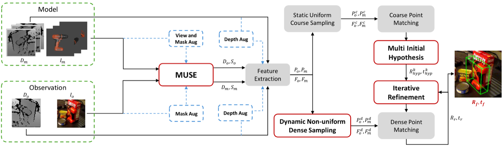
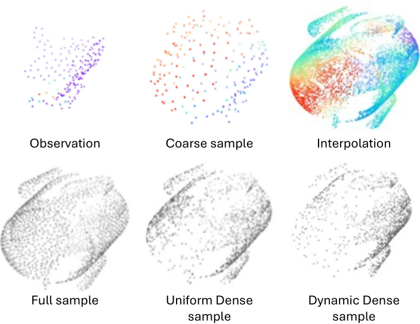
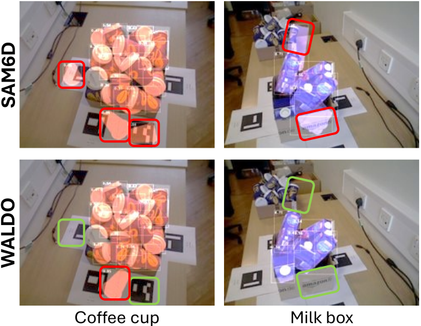
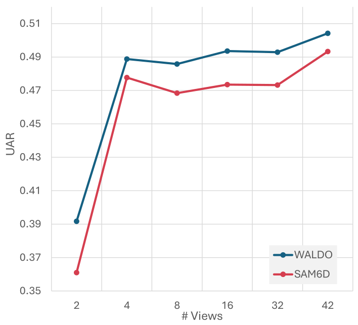
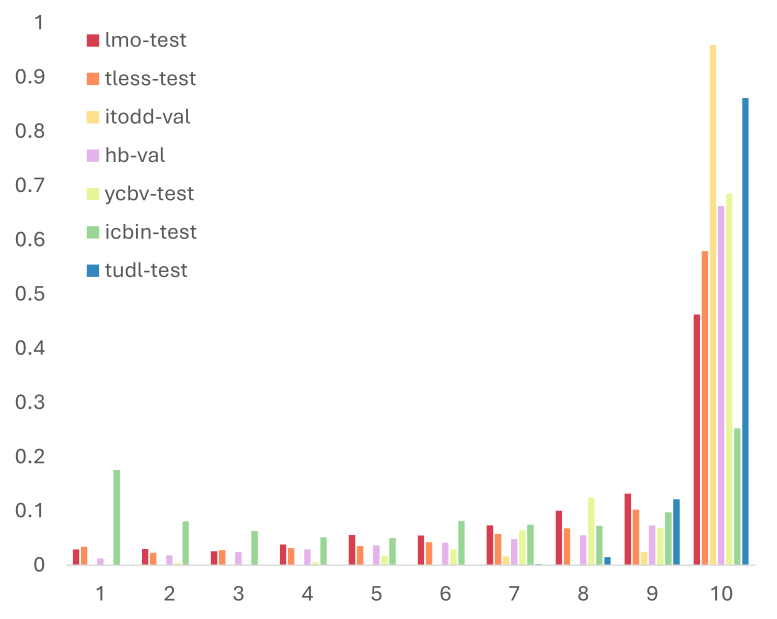

Summary
Makes the standard detect–segment–hypothesize–refine pose pipeline robust to occlusion by spending computation on the parts of an object that are actually visible.
Abstract
Accurate 6D object pose estimation is vital for robotics, augmented reality, and scene understanding. For seen objects, high accuracy is often attainable via per-object fine-tuning but generalizing to unseen objects remains a challenge. To address this problem, past arts assume access to CAD models at test time and typically follow a multi-stage pipeline to estimate poses: detect and segment the object, propose an initial pose, and then refine it. Under occlusion, however, the early-stage of such pipelines are prone to errors, which can propagate through the sequential processing, and consequently degrade the performance. To remedy this shortcoming, we propose four novel extensions to model-based 6D pose estimation methods: (i) a dynamic non-uniform dense sampling strategy that focuses computation on visible regions, reducing occlusion-induced errors; (ii) a multi-hypothesis inference mechanism that retains several confidence-ranked pose candidates, mitigating brittle single-path failures; (iii) iterative refinement to progressively improve pose accuracy; and (iv) series of occlusion-focused training augmentations that strengthen robustness and generalization. Furthermore, we propose a new weighted by visibility metric for evaluation under occlusion to minimize the bias in the existing protocols. Via extensive empirical evaluations, we show that our proposed approach achieves more than 5% improvement in accuracy on ICBIN and more than 2% on BOP dataset benchmarks, while achieving approximately 3 times faster inference.
Key Contributions
- Estimates occlusion probabilities while forming the initial pose hypothesis, then uses dynamic non-uniform dense sampling to prioritize visible regions during refinement.
- Maintains multiple initial hypotheses, refines them iteratively, and selects the final pose by post-refinement confidence rather than committing early.
- Training-time augmentations that simulate partial visibility: depth noise and dropout, mask corruption, and partial-view template rendering.
- Occlusion-aware variants of standard 2D detection, segmentation, and 6D pose metrics, which remove the optimistic bias of benchmarks dominated by high-visibility instances.
Approach


Results
- Improves accuracy by more than 5% on IC-BIN and more than 2% on BOP.
- Achieves roughly 3× faster inference than the comparable baseline.
- Produces fewer false positives than SAM-6D in cluttered and heavily occluded scenes.
BOP-Core* — detection and segmentation
| Model | AP | mAPD | AR | mARD |
|---|---|---|---|---|
| CNOS | 0.425 | 0.169 | 0.519 | 0.374 |
| Fast-SAM | 0.456 | 0.216 | 0.528 | 0.384 |
| NIDS | 0.463 | 0.214 | 0.555 | 0.421 |
| SAM-6D | 0.491 | 0.202 | 0.576 | 0.433 |
| WALDO (ours) | 0.508 | 0.218 | 0.594 | 0.444 |
mAPD and mARD are the proposed occlusion-aware metrics.
6D pose — average recall / unbiased average recall, and runtime
| Model | IC-BIN | BOP-Core* | Time (s) |
|---|---|---|---|
| FRTPose | 0.67 / 0.71 | 0.70 / 0.82 | 45.37 |
| FoundationPose | 0.42 / 0.50 | 0.57 / 0.74 | 29.32 |
| FreeZe | 0.64 / 0.69 | 0.66 / 0.82 | 24.89 |
| Co-op | 0.52 / 0.63 | 0.61 / 0.77 | 6.92 |
| SAM-6D | 0.50 / 0.58 | 0.54 / 0.71 | 4.37 |
| WALDO (ours) | 0.56 / 0.63 | 0.56 / 0.73 | 1.53 |
WALDO beats SAM-6D on accuracy while running roughly 2.9× faster.



BibTeX
@inproceedings{pakdamansavoji2026waldo,
title = {WALDO: Where Unseen Model-based 6D Pose Estimation Meets Occlusion},
author = {Sajjad Pakdamansavoji and Yintao Ma and Amir Rasouli and Tongtong Cao},
booktitle = {Proceedings of the IEEE/CVF Winter Conference on Applications of Computer Vision (WACV)},
year = {2026}
}